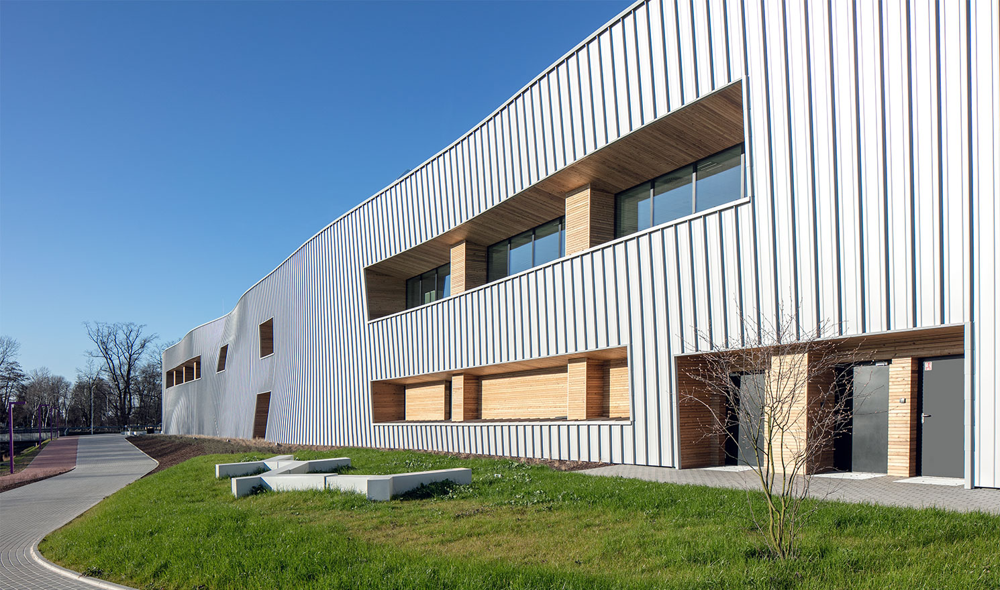

HKIU strives to develop campus that reflects academic excellence of the University with high functional efficiency. We render facilities adequate, safe, contemporary and available for learning, teaching, research, community and industry linkage, intellectual, cultural and leisure pursuits equitably for staff and students.
It is located on the third to fourth floor of the Academic Building, the Library provides over 500 computers for students to independent learning. Instead of 2 million printed book,there are 3 million electronic books which include different academic areas.
The sports building in the campus are available to all HKIU student for using. There are gym room,indoor sport ground,indoor swimming pool,etc for students to book and use
Tommy Chan Health Centre is a medical and dental clinic on campus that provides general medical consultations and dental care services to members of HKIU. Healthcare services in Hong Kong are comprehensive, highly professional and people-centred.

Library:https://www.hk01.com/%E5%8D%B3%E6%99%82%E5%9C%8B%E9%9A%9B/17539/%E4%B8%96%E7%95%8C%E9%96%B1%E8%AE%80%E6%97%A5-%E6%AD%90%E7%BE%8E%E6%8E%80%E8%B5%B7%E6%AE%BA%E9%A4%A8%E6%BD%AE-%E5%9C%96%E6%9B%B8%E9%A4%A8%E5%93%80%E6%AD%8C%E9%9F%BF%E9%81%8D
Map:http://www.martybee.com/?attachment_id=58
sport:https://bemo.com/en/sport-leisure
clinic:https://unsplash.com/s/photos/clinic
https://www.cityu.edu.hk/student-life/facilities
line 26 34 42: use position:relative
line 50: use position:fixed
line 29 37 45: use border-radius
line 30 38 46: use box-shadow
Group: id:facilities, map; class:facility1,2,3 ,map
name:Chan Sing To
SID:58533974